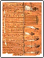

CSCI130 Lab 3 - TDL
In this lab I will be creating an html document in the hopes of becoming familiar with the features and structure of the language.
Basics of HTML (from what I can tell)
It would appear that an html document requires at the very least an <html> and a </html> tag. I just checked and it appears even that is not entirely necessary. An html file with nothing but the text "test" in it loaded fine displaying that text in my chrome browser.
Now I will list some of the requirements of the lab and attempt to fulfill them in the same line, in list format.
- I need to present some character entities.
- Here is an accented vowel (I think): Ü
- Here is a ligature: Æ
- This sentence is in bold and italic.
- Here is a copyright symbol: ©, and here are the cent and pound sterling symbols: ¢ £
- This line is in subscript, and this line is in superscript.
- I'm not sure what an indented extended quotation is, but
this is what it does...
- Above was an unordered list; this is an ordered list.
- This is the second item of my ordered list.
- This is an example of a nested ordered list within an ordered list.
Here is a sample usage of the horizontle rule tag:
Here is another horizontle; this time of size 15:
Hmm, not much different. Lets try size 25:
That's a little bit better, but I wonder how big it could actually get?
Let's go crazy and set it to 200:
That's more like it, though I doubt I'll ever end up using one that sizable.
Let's try one with some attributes thrown in:
Hmm, not quite what I expected. Lets try that again:
Good enough, I think.
Here is my preformatted c++ program. The "xmp" tag works wonderfully here, but I hear its usage may be frowned upon for some reason.
#include <iostream>
int main()
{
cout << "Hello, web programming world!" << endl;
return 0;
}
I felt this might be a good opportunity to try linking between pages. Click here to continue.
Here is a link to an incredibly useful webpage that I think everyone is already familiar with.
Now I will try to insert an image into this page in different ways.

Now I will alter the img tag to change the size and position.
Now as you can see here, I can distort the image away from its original aspect ratio:
Click here to return to the top of the page.